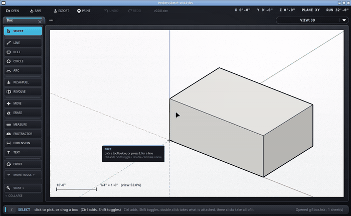

A cube in the corner that says which way you are facing, and takes you anywhere.
Off until you ask for it. /cube on puts it in the top right
of a 3D view; /cube off takes it away. It is remembered after
that.

In the 3D view, Ctrl and an arrow key walks round the cube a step at a time, gliding the same way a click does.
The cube does not have to be showing for this to work.
Every click flies the camera there rather than jumping, and it pivots on what you are looking at. Watching it turn is what stops you losing your place.
/cube tl, tr, bl or br
puts it in whichever corner suits you. Top right unless you say
otherwise.
/cube fitselection on makes a click bring what you have
selected into the middle and size it on the way round. With nothing
selected it never re-frames - it just goes to the view you asked for.
/cube fitselection off turns it back off.
The VIEW button along the top tells you the name of a view. The cube tells you which way round you are, which is the thing you actually want to know when you have been spinning a model for ten minutes. This one is Revit's idea; SketchUp has no such thing.